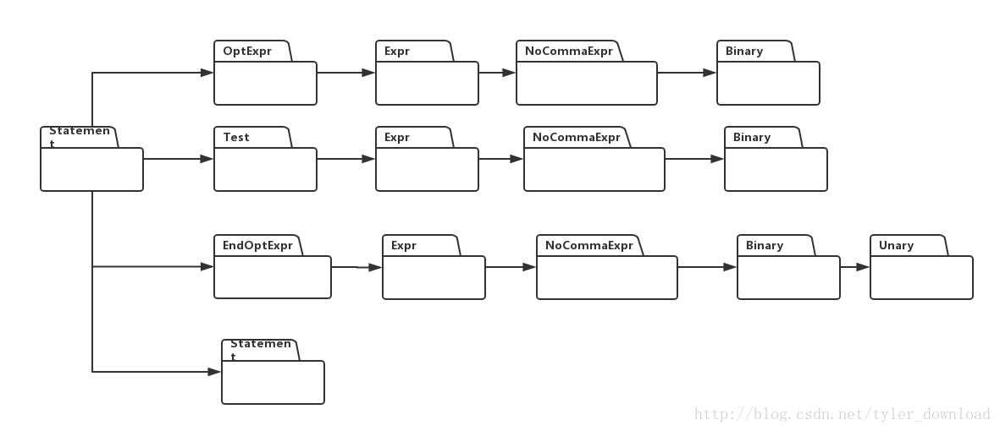

请参看视频以便获得更详细的代码讲解和演示流程：
用java开发C语言编译器
大家或许发现，我们当前的C语言解释器，存在一个问题，那就是，当变量声明的同时如果付初值的话，解析器会出错，也就是对于下面语句：
int a = 0;
我们当前的解析器是解析不了的，必须把上面的语句转换为：
int a;
a = 0;
要想使当前的解释器能够解析并执行变量声明同时付初值的功能，实现起来较为复杂，所以我决定先把这个功能放一放，把精力先使用在更为重要的实现上。
本节我们要为解释器增加的功能是对for循环进行解析和执行，for循环的语法表达式如下：
STATEMENT -> FOR LP OPT_EXPR TEST SEMI END_OPT_EXPR RP STATEMENT(84)其对应的执行树结构如下：

对于一个具体的循环语句：
for (i= 0; i < 3; i++) {
a = a + 1;
}i = 0 对应于节点OptExpr, i < 3 对应节点Test, i++ 对应节点EndOptExpr, a = a+ 1; 对应最后一个Statement节点。
解释器在执行for 语句时，先执行OptExpr节点，然后执行Test节点，如果Test节点执行后返回的值大于0，则执行最下面的Statement节点，然后再执行EndOptExpr节点，也就是for 循环后面的i++语句。
整个流程执行完毕后，解释着再次执行Test节点，如果执行后返回值不等于0，则继续执行最下面的Statement节点和EndPotExpr节点，如果返回值等于0，则执行结束。
我们看看相关代码，在CodeTreeBuilder.java中，做以下改动：
public ICodeNode buildCodeTree(int production, String text) {
ICodeNode node = null;
Symbol symbol = null;
switch (production) {
...
case CGrammarInitializer.FOR_OptExpr_Test_EndOptExpr_Statement_TO_Statement:
node = ICodeFactory.createICodeNode(CTokenType.STATEMENT);
node.addChild(codeNodeStack.pop());
node.addChild(codeNodeStack.pop());
node.addChild(codeNodeStack.pop());
node.addChild(codeNodeStack.pop());
break;
....
case CGrammarInitializer.Expr_Semi_TO_OptExpr:
case CGrammarInitializer.Semi_TO_OptExpr:
node = ICodeFactory.createICodeNode(CTokenType.OPT_EXPR);
if (production == CGrammarInitializer.Expr_Semi_TO_OptExpr) {
node.addChild(codeNodeStack.pop());
}
break;
case CGrammarInitializer.Expr_TO_EndOpt:
node = ICodeFactory.createICodeNode(CTokenType.END_OPT_EXPR);
node.addChild(codeNodeStack.pop());
break;
...
}增加的代码就是用来构造前面所说的关于for循环执行树的几个节点。在StatementExecutor的实现中，我们增加了对for循环的这里写代码片实现：
public class StatementExecutor extends BaseExecutor{
private enum LoopType {
FOR,
WHILE,
DO_WHILE
};
@Override
public Object Execute(ICodeNode root) {
int production = (int)root.getAttribute(ICodeKey.PRODUCTION);
switch (production) {
case CGrammarInitializer.FOR_OptExpr_Test_EndOptExpr_Statement_TO_Statement:
//execute OptExpr
executeChild(root, 0);
while( isLoopContinute(root, LoopType.FOR) ) {
//execute statment in for body
executeChild(root, 3);
//execute EndOptExpr
executeChild(root, 2);
}
break;
default:
executeChildren(root);
break;
}
return root;
}
private boolean isLoopContinute(ICodeNode root, LoopType type) {
ICodeNode res = null;
if (type == LoopType.FOR) {
res = executeChild(root, 1);
int result = (Integer)res.getAttribute(ICodeKey.VALUE);
return result != 0;
}
return false;
}
}executeChild(root, 0); 对应于执行树中的OptExpr节点，也就是执行for语句中的变量初始化语句，也就是i = 0; isLoopContinute 执行的是执行树中第二个节点，也就是Test节点，对应的是for 语句中的 i < 3语句，如果返回的结果不等于0，也就是循环条件满足，那么执行循环体内部的语句代码，也就是通过调用
executeChild(root, 3);, 从而执行执最下面的Statement节点，对应于例子中，就是 a = a + 1; 最后通过调用executeChild(root, 2); 执行EndOptExpr节点，对应于for循环，就是语句i++;
我们需要添加新的代码，以便解释器能正确执行i++语句，该语句对应的语法表达式是：
UNARY -> UNARY INCOP
所以我们需要在UnaryNodeExecutor中，添加相应的实现代码，具体改动如下：
public class UnaryNodeExecutor extends BaseExecutor{
@Override
public Object Execute(ICodeNode root) {
executeChildren(root);
....
switch (production) {
....
case CGrammarInitializer.Unary_Incop_TO_Unary:
symbol = (Symbol)root.getChildren().get(0).getAttribute(ICodeKey.SYMBOL);
Integer val = (Integer)symbol.getValue();
IValueSetter setter;
setter = (IValueSetter)symbol;
try {
setter.setValue(val + 1);
} catch (Exception e) {
// TODO Auto-generated catch block
e.printStackTrace();
System.err.println("Runtime Error: Assign Value Error");
}
break;
}
}
}我们先拿到变量i所对应的Symbol对象，通过该对象的ValueSetter接口，使得变量的值自加1.
通过上面的代码改进，我们的解释器对C语言的执行能力可以得到进一步加强，可以正确解析和执行下面的C语言代码：
void f() {
int i;
int a;
i = 0;
a = 0;
for (i = 0; i < 3; i++) {
a = a + 1;
}
}
更深入具体的代码讲解，调试过程，请参看网易云课堂视频，也欢迎关注我的公众号，在公众号里，我集合了更多的技术内容的文档，代码和视频，其包含编译器，操作系统，算法，未来还会添加人工智能，深度学习等内容。